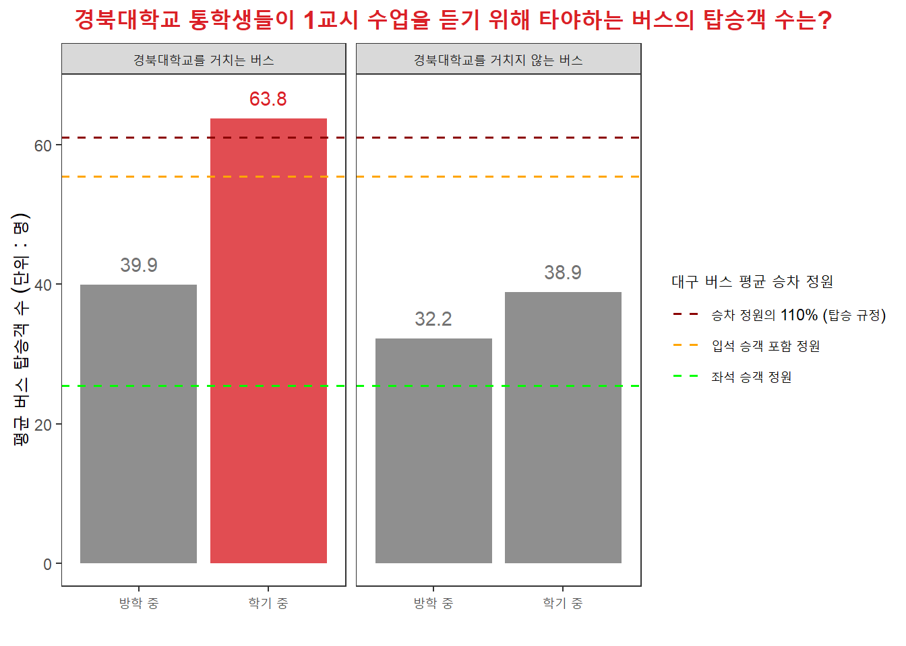
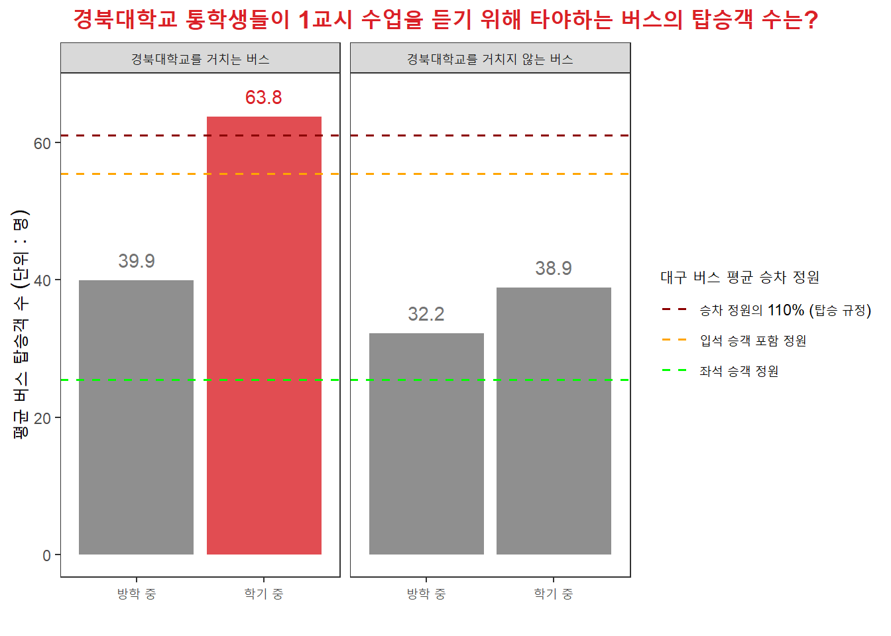
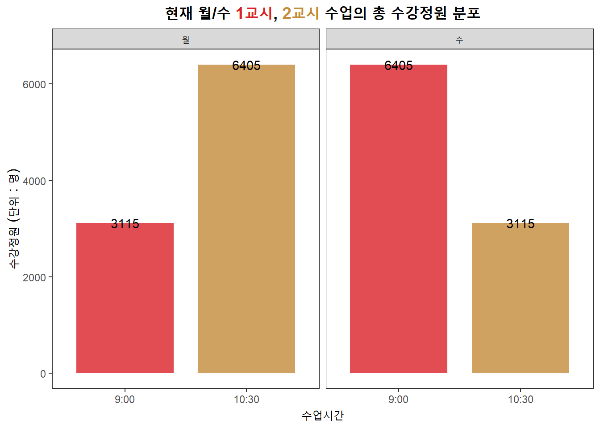
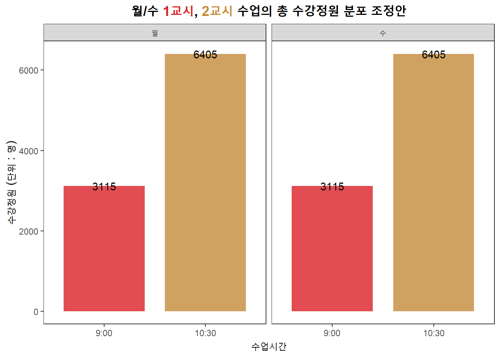
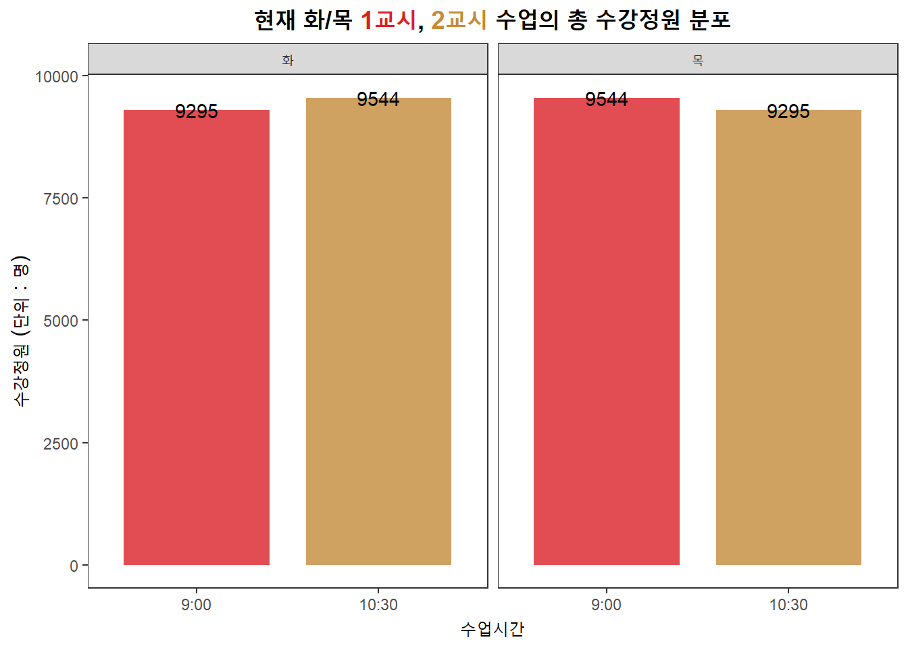
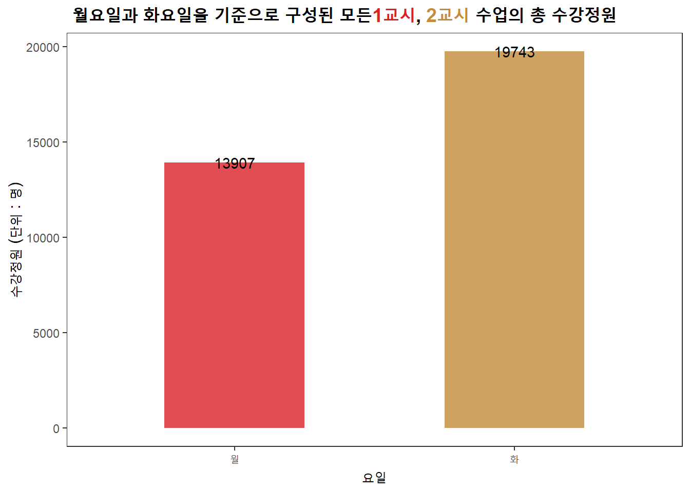

Warning: Using `size` aesthetic for lines was deprecated in ggplot2 3.4.0.
i Please use `linewidth` instead.
이윤호, 변석호, 송고은, 김아은, 여진영, 신예원
통계청에서 대학생 425명을 대상으로 한 <한국대학신문 캠퍼스라이프>의 조사에 따르면 대학생 중 집에서 ’통학’을 하는 학생의 비율은 52%, 본가를 떠나 대학 인근에서 독립해 사는 나머지 대학생들은 약 48% 정도인 것으로 나타났다. 실제로 조사에 따라 결과는 조금씩 다르지만 통학을 하는 학생과 학교 인근에서 독립해 사는 학생의 비율이 거의 절반 정도로 나타난다.
그렇다면 경북대학교 학생들의 통학과 자취 비율은 어떠할까? 2020년 기준 대구에 주소지를 두고 입학한 본교 신입생 수는 2,182명이었다. 전체 입학자 수가 4,915명인 것을 고려해 보았을 때 약 44%에 해당하는 수치로 이들은 대부분 등하교를 위해 대중교통을 이용하는 통학 인원으로 추정할 수 있다.
코로나19로 인해 대부분 비대면 수업을 한 재작년과 작년을 거쳐 올해 대부분의 대학들이 대면 수업으로의 전환을 시도하며 1교시 통학에 대한 불만의 목소리들이 커져가고 있다. 대구 달성군 다사읍에서 통학을 하는 학생 A는 대실역에서 출발해 반월당에서 버스를 갈아탄 후 북문에서 내린다. 대략 1시간 정도 소요되지만 아침 시간의 경우 여러 고려해야 할 요소가 많다 보니 부지런히 준비해야 제시간에 도착할 수 있다.
“직장인들, 학생들 등 많은 사람들이 오가는 아침 시간에 버스를 이용하다 보니 체력적인 부분에서의 한계 그리고 차편 부족이 가장 큰 고충이 아닐까 싶습니다. 아침 버스는 서있을 자리조차 비좁고 종종 버스 손잡이도 잡지 못한 채 휘청거리며 오는 날에는 진이 빠져 수업에 집중하기가 어려웠습니다. 그리고 버스에 사람이 너무 많으면 기다려도 못 타고 다음 버스를 타야 되니 집에서 일찍 나와도 지각을 할까 봐 억울하기도 하고 조마조마한 기분입니다.”
또 다른 학생 B는 학교까지 1시간 30분 정도 소요되는 거리에서 통학을 한다.
“1교시 통학은 기상시간이 제일 힘든 것 같습니다. 아침에 밀리는 시간까지 고려했을 때 7시가 조금 넘으면 버스를 타야 하고, 그러면 기상시간이 6시 정도로 당겨질 수밖에 없습니다. 그 뿐만 아니라 이른 등교는 출근시간과 겹쳐 교통이 혼잡하고 버스에도 사람이 가득해서 신체적으로 상당히 부담스럽습니다. 모르는 이들과 서로서로 밀착한 상태로 오랜 시간을 흔들리는 버스 안에서 버티는 것 또한 상당한 스트레스입니다.”
이처럼 1교시 수업을 듣기 위해 학교로 오는 경우 다른 시간대에 비해 버스 혼잡도가 높고 버스에 사람이 많다면 버스를 타지 못하는 등의 문제가 발생한다. 게다가 경북대학교의 인근에는 지하철역이 존재하지 않기 때문에 대부분의 학생들은 버스를 타고 통학해야 하는 상황이다. 사람에 치이고 시간에 쫓기는 실정이다. 따라서 경북대학교 대구캠퍼스로 통학하는 학생들의 삶을 살펴보고 이를 통해 도출할 수 있는 방안에 대해 짚어보고자 한다.
1교시 수업, 즉 9시 수업을 듣기 위해 이용하는 버스는 출근시간대의 영향으로 다른 시간대보다 더 많은 혼잡도를 야기한다는 것을 우리는 경험적으로 알고 있다. 그리하여 경북대학교 통학생들이 등교를 위해 이용하는 버스와 경북대학교를 지나지 않는 다른 버스와의 차이를 학기 중과 방학 중으로 나누어 비교하여 1교시 통학에 대한 어려움을 보여주고자 하였다. 또한 경북대학교를 거치는 버스에서 학기 중과 방학 중의 탑승객 수 차이를 통해 1교시 통학을 하는 경북대학교 학생의 수를 유추해볼 수 있을 것이다.
경북대학교 통학생들이 등교를 하기 위해 이용하는 버스노선은 410, 410-1, 503, 937, 동구2, 북구2, 300, 306, 523, 706, 719, 급행6, 323-1이 있다. 이는 경북대홈페이지의 ’찾아오시는 길’을 참고하여 선정하였다. 방학 중과 학기 중의 기간은 각각 1월, 2월, 7월, 8월과 3월, 4월, 5월, 9월, 10월, 11월으로 나누었으며 6월과 12월은 학기와 방학이 겹쳐 있어 따로 제외시켜 주었다.
또한, 대구에서 운행되는 버스는 노선 별로 운행 횟수의 차이가 있기 때문에 ‘대구광역시 시내버스 노선별 평균 배차간격’ 데이터를 이용하여 버스 노선 별 1시간 당 평균 운행 횟수를 구하여 결과 도출에 적용하였다.
대구광역시의 경우 버스 하차 시 하차태그가 의무가 아니기 때문에 데이터에 나타난 하차인원 수는 실제로 하차한 인원 수 보다 적게 입력되어 있었다. 따라서 ’대구광역시 정류소별 시간대별 승하차인원’을 이용하여 전체 승차인원과 전체 하차인원 간의 비율을 계산하여 하차태그를 하는 사람의 비중을 구해주었다. 약 35.8%의 사람들이 하차태그를 찍고 내린다는 것을 알 수 있었고 이 값을 5시부터 8시 59분까지의 하차인원수의 합에 나누어 예상 하차 인원 수를 추정하였다.
Warning: Using `size` aesthetic for lines was deprecated in ggplot2 3.4.0.
i Please use `linewidth` instead.
그리고 한 버스에 타고 있는 탑승객 수를 알기 위해서 5시부터 8시 59분까지 누적 승차인원 수와 하차인원 수의 차를 계산하고 시간 당 운행 회수를 나누어 주었다. 경북대학교를 거치는 버스와 경북대학교를 거치지 않는 버스, 겹치는 월을 제외한 방학 중과 학기 중을 하나의 그룹으로 설정하고 한 버스에 타고 있는 탑승객 수의 평균을 구해주었다. 결과적으로 경북대학교를 거치는 버스는 방학 중에 39.9명이, 학기 중에는 63.8명이 탑승한다는 것을 알 수 있었고 경북대학교를 거치치 않는 버스는 방학 중에 32.2명, 학기 중에는 38.9명이 탑승한다는 결론을 도출할 수 있었다. 경북대학교를 거치는 버스와 거치지 않는 버스를 비교하였을 때 방학 중과 학기 중의 탑승객 수 차이가 각각 약 24명, 6명으로 경북대학교를 거치는 버스의 탑승 인원수가 더 많았다. 등교하는 학생들 때문에 버스의 탑승객 수가 다른 버스들보다 증가하였다고 추론해볼 수 있었다. 또한 경북대학교를 거치는 버스를 보면 학기 중의 탑승객 수는 버스 탑승 규정인 61명을 초과하였다. 결과적으로 그 시간대에 버스를 타는 사람들은 과포화된 버스에 끼여서 타거나, 타지 못하고 다음 버스를 기다려야하는 상황이 발생한다는 것을 보여준다. 이는 경북대학교 학생들 뿐만 아니라 시민들 역시 버스를 이용하기 어렵다는 것을 알 수 있다.
일반적으로 경북대학교의 수업은 대부분 월/수, 화/목으로 구성되며 월요일이 1교시 수업이라면 수요일에는 1교시 외의 시간대, 대부분 2교시에 수업이 이루어지는 방식을 가진다. 이를 고려해 수강정원이 적은 수업의 강의 시간을 9시로 이동해 버스의 혼잡도를 낮추고 1교시 등교의 부담을 줄이는 방식을 제안하고자 한다.
먼저 경북대학교의 1교시 수업 현황을 파악하기 위해 경북대학교 홈페이지 ’수업 시간/강의계획서’를 참고하여 수업시간에 1A(09:00-9:30)가 포함되는 강의를 조회하였고 그 중 월/수, 화/목으로 구성된 강의를 각 요일마다 9시 수업과 10시 30분 수업으로 나누어 총 수강정원을 구해주었다.


월/수 강의에서 9시 수업의 총 수강정원은 월요일에 3,115명, 수요일에 6,405명으로 집계되었다. 수요일 1교시 수업을 듣기 위해 등교해야 되는 인원이 월요일에 비해 더 많기 때문에 수요일 아침 시간 통학의 불편함이 더 클 것이라 예상된다. 따라서 월요일 9시와 수요일 10시 30분으로 구성된 강의에서 수강정원이 적은 월요일 1교시를 수요일에도 1교시에 배치하면 동일 시간대로 구성되어 월요일과 수요일의 1교시 통학생이 같아지며 수요일 통학 인원이 줄어들게 되고 버스의 혼잡도가 감소하여 통학생들의 불편함이 줄어들 것이다.

반면 화/목 강의의 경우, 9시 수업과 그 외 수업 간의 총 수강정원 차이가 나타나지 않아 월/수 수업 구성처럼 수강정원이 적은 수업을 모두 아침시간으로 이동하여 1교시 통학생을 줄이는 방식을 적용할 수 없다.
따라서 새로운 방법으로 월요일과 화요일을 기준으로 구분하여, 9시 수업과 10시 30분 수업을 진행하는 강의의 수강정원을 비교하여 요일 간 총 수강정원의 격차가 있는지 알아보고 그 차이가 존재한다면 수강정원 비중을 조정할 수 있는 방안을 제시하려 한다.

마찬가지로 동일 데이터를 활용하여, 중복되는 월요일과 화요일에 동시에 수업을 하는 강의는 제외하고 총 수강정원을 구해본 결과 월요일을 포함한 강의의 총 수강정원은 13,907명이고 화요일을 포함한 강의의 총 수강정원은 19,743명이었다. 두 요일의 총 수강인원 차이는 약 5,836명 정도이며 특히 화요일을 포함한 강의 중, 화/목 간의 1교시와 2교시 수업 구성의 총 수강정원은 18,839명으로 화요일로 구성된 수업의 수강정원 대부분을 차지하고 있는 것을 확인할 수 있었다. 이를 바탕으로 월요일보다 화/목 9시에 더 많은 인원이 이동하고 버스가 혼잡할 것이라 생각할 수 있다. 따라서 상대적으로 적은 수강정원을 보이는 월요일과 같은 날짜에 화/목 수업을 분배해 준다면 화-목 아침 시간에 밀집되는 통학생을 분산시킬 수 있고 버스를 이용하는 데 있어서도 조금 더 수월할 것이라 생각된다.
본 대안은 단기적으로 상대적인 불편함을 줄일 순 있지만 완전한 해결방안으로 보기는 어렵다.
현재 장기적인 시각에서 통학문제를 해결할 수 있는 대책으로는 대구 도시철도 엑스코선이 언급되고 있다. 2021년 발표된 예비타당성조사 보고서 ’대구 도시철도 엑스코선 건설사업’에 따르면 엑스코선은 3호선 수성구민운동장역에서 동대구역, 경북대학교를 지나 이시아폴리스까지 이어지는 총 연장 12.3km의 도시철도 신설 사업으로 차량시스템은 모노레일로 계획되었다. 본 사업노선의 역별 수송수요 예측 결과 경북대학교가 위치한 역에서 많은 승하차량이 예상되며 사업 시행으로 인한 주변 도로 교통량의 변화로 대구광역시 내부 도로의 교통량이 전반적으로 감소할 것으로 분석된다. 또한 본 사업노선은 대부분 기존의 도시철도 노선이 존재하지 않은 지역을 관통하며 기존 도시철도와의 환승이 가능하도록 연결되어 도시철도-버스 간의 환승을 통해 대구시 전체 도시철도 네트워크와의 연계가 가능할 것으로 보인다.
따라서 경북대학교를 지나는 도시철도 노선이 개통되면 통학생들이 선택할 수 있는 교통수단이 증가해 장기적으로 더 편안한 통학이 가능할 것으로 전망된다.
데이터저널리즘 3조
2017111708 국어국문학과 이윤호
2017113417 국어국문학과 변석호
2018113539 레저스포츠학과 신예원
2018114438 미디어커뮤니케이션학과 김아은
2018116311 식품공학부 식품응용공학과 송고은